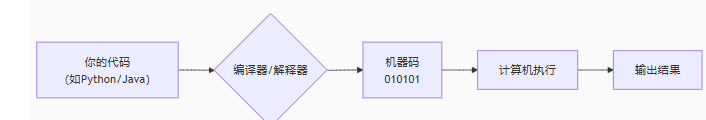
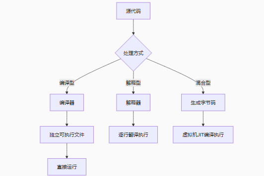

什么是编程 #
编程就是用一种计算机能理解（经过翻译）的语言，编写一套精确、逻辑清晰的指令，让计算机执行特定的任务或解决特定的问题。它是构建我们数字世界所有软件、应用和系统的基础技能。
简单比喻：就像写一份极其详细的食谱（代码），让一个完全不会做饭但动作超快的机器人（计算机）按步骤做出一道菜（完成任务）。
- 你（程序员） 👨🍳：设计任务（如“做番茄炒蛋”）。
- 菜谱（代码） 📝：用编程语言写下详细步骤（切番茄、打鸡蛋、炒制顺序）。
- 机器人（计算机） 🤖：严格按步骤执行，没有自我发挥。
✅ 核心：编程就是编写精确指令，让计算机完成任务。
执行步骤：
| 概念 | 符号表示 | 一句话定义 |
|---|---|---|
| 编程 | 🧑💻→📝→🤖 | 给计算机写步骤说明书的过程 |
| 编程语言 | 🌉(人↔机翻译桥) | 人和计算机都能理解的指令规则集 |
| 代码 | 📜{指令清单} | 用编程语言写的具体指令 |
| 编译器 | 🔄(代码转二进制) | 把高级语言翻译成机器码的程序 |
什么是编程语言 #
编程语言是人类与计算机沟通的桥梁，是一套预先定义好规则和语法的符号系统，专门用于编写计算机程序。
| 人类语言 | 编程语言 | 机器语言 |
|---|---|---|
| “把温度调到25度” | set_temperature(25) |
1101101010110001（二进制） |
| 特点：有歧义、不精确 | 特点：逻辑严谨、无歧义 | 特点：只有0和1 |
✅ 核心：编程语言是人机沟通的翻译工具，将人类逻辑转化为计算机可执行的二进制指令。
如何工作：

流程解析： 1️⃣ 写代码 → 2️⃣ 翻译成二进制 → 3️⃣ 计算机运行 → 4️⃣ 输出结果
主流编程语言举例 #
| 语言 | 图标 | 典型用途 |
|---|---|---|
| Python | 🐍 | 数据分析、AI、网站后台 |
| JavaScript | 🌐 | 网页动态效果、APP开发 |
| Java | ☕ | 企业系统、安卓APP |
| C++ | ⚙️ | 游戏引擎、操作系统 |
编程语言分类 #
1、抽象层级（贴近硬件程度） #
🔥 最底层：直接控制硬件
- 机器语言 (10110011 00001110) → 纯二进制，CPU直接执行
- 汇编语言 (MOV AX, 5) → 助记符对应机器指令
🚀 高层抽象：专注业务逻辑
- C语言 (printf(“Hello”)) → 需手动管理内存
- Java/Python (System.out.println(“Hello”)) → 自动内存管理
- SQL (SELECT * FROM users) → 声明式语言
关键区别：
✅ 低级语言：执行快，控制硬件，开发效率低（如操作系统内核）
✅ 高级语言：开发快，跨平台，屏蔽硬件细节（如Web应用）
2、执行方式（如何转化为机器码） #
🔥 编译型：将源代码一次性翻译成机器码，再执行
- 如 C/C++, Go
🚀 解释型：逐行解释并执行源代码
- 如 Python, Ruby
混合型：既有编译型，又有解释型
- 如 JavaScript

关键区别：
✅ 编译型：执行前需编译，效率高但跨平台需重编译
✅ 解释型：无需编译，跨平台性好但执行慢
✅ 混合型：编译型与解释型的结合，如 JavaScript
3、编程范式（设计思想） #
| 范式 | 核心思想 | 关键特点 | 代表语言 |
|---|---|---|---|
| 面向过程 | 程序是一系列步骤的集合，通过函数调用组织代码 | • 线性执行流程 • 数据与操作分离 • 自顶向下分解问题 | C, Pascal, Fortran, Basic |
| 面向对象 | 程序是相互作用的对象的集合，对象包含数据（属性）和行为（方法） | • 封装、继承、多态 • 类与对象为核心 • 消息传递机制 | Java, C++, Python, C#, Swift |
| 函数式 | 程序是函数的组合与求值，强调无状态和不可变数据 | • 纯函数（无副作用） • 高阶函数 • 递归为核心控制流 • 惰性求值 | Haskell, Lisp, Erlang, Scala |
| 声明式 | 描述**“做什么"而非"如何做”**，由系统自动推导执行过程 | • 无明确执行步骤 • 高度抽象 • 依赖引擎优化执行 | SQL, Prolog, HTML, CSS |
| 逻辑式 | 程序是事实+规则的知识库，通过逻辑推理解决问题 | • 基于谓词逻辑 • 回溯搜索机制 • 声明关系而非流程 | Prolog, Datalog |

编程语言是人类为了高效、精确地指挥计算机工作而发明的一系列人造语言。它们通过严格的语法和语义，将程序员的思想逻辑转化为计算机可执行的指令，并极大地提高了软件开发的效率和可靠性。选择哪种语言取决于你要解决的具体问题、性能需求、开发效率和团队技能等因素。